智能体使用 II：用多智能体成为 100 倍工程师
子智能体、并行智能体、智能体团队；如何拆分任务、验证产出，把多个智能体组织成高效的工程流程。
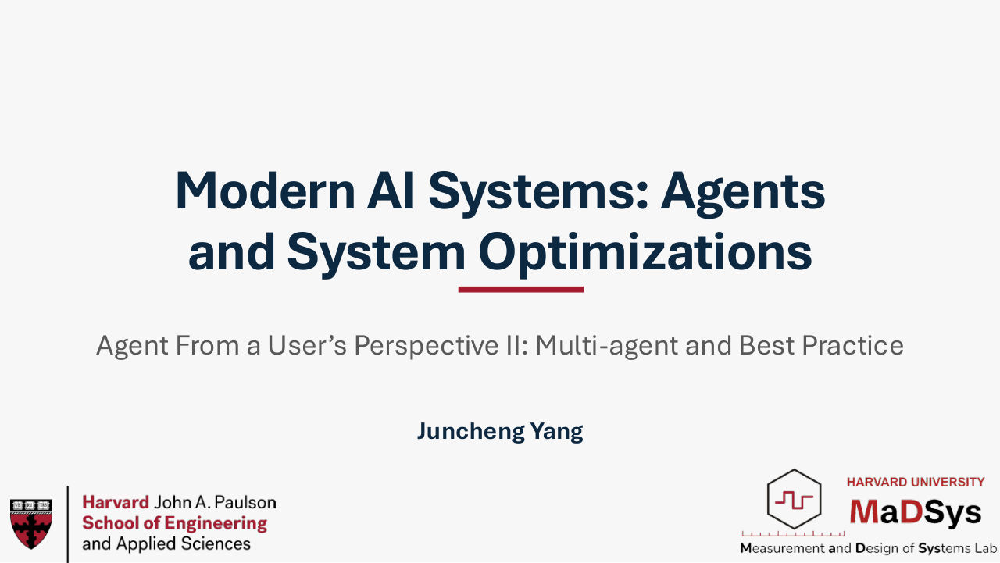
现代 AI 系统：智能体与系统优化
Juncheng Yang
用户视角下的智能体 II：多智能体与最佳实践
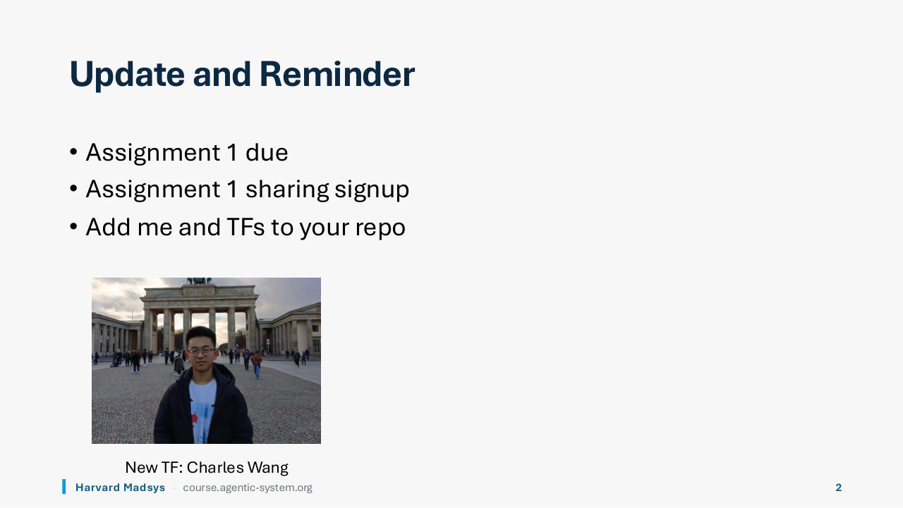
通知与提醒
- 作业 1 即将截止
- 作业 1 分享环节报名
- 把我和助教们加到你的仓库里
- 新助教：Charles Wang
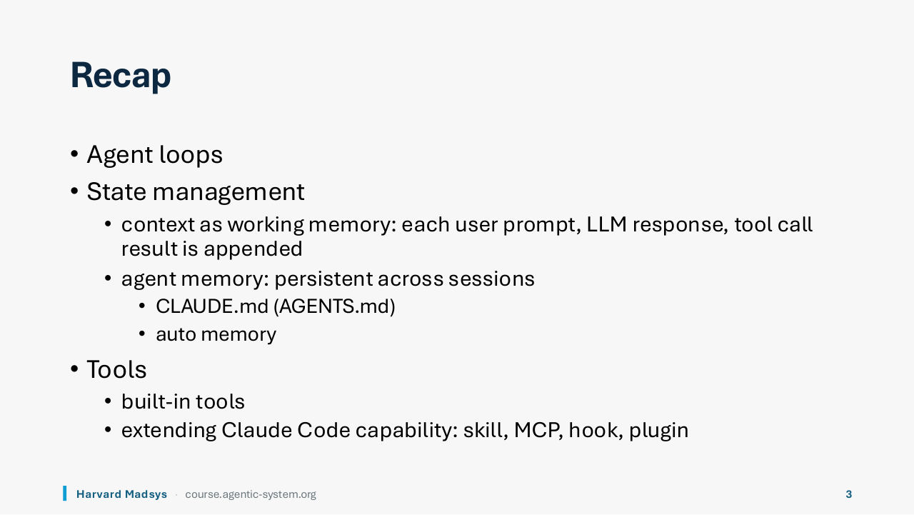
回顾
- 智能体循环
- 状态管理
- 上下文即工作记忆：每条用户提示词、LLM 回复、工具调用结果都会被追加进去
- 智能体记忆：跨会话持久保存
- CLAUDE.md（AGENTS.md）
- 自动记忆
- 工具
- 内置工具
- 扩展 Claude Code 的能力：Skill、MCP、Hook、插件
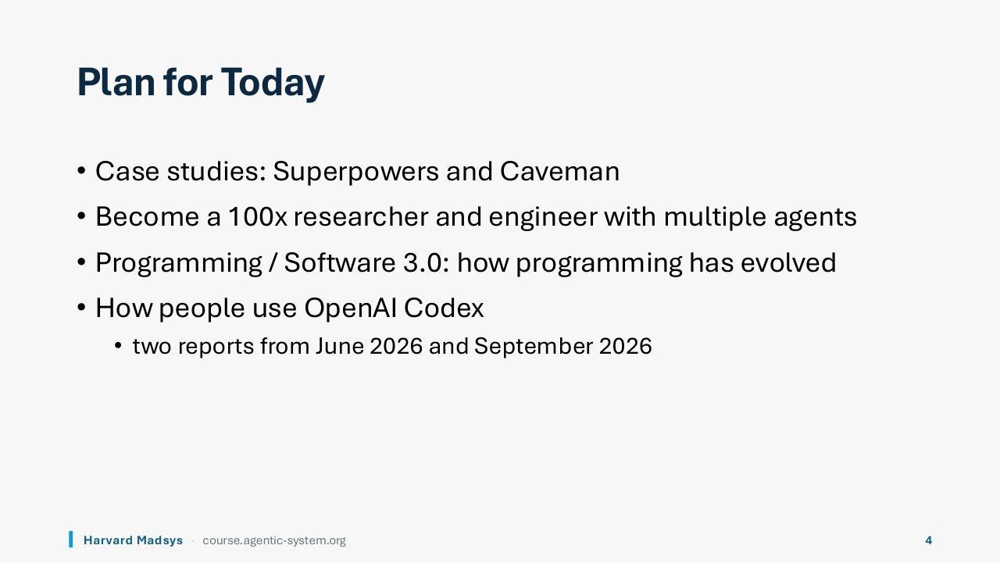
今天的安排
- 案例研究：Superpowers 与 Caveman
- 借助多个智能体，成为 100 倍效率的研究者和工程师
- 编程 / 软件 3.0：编程是如何演进的
- 人们如何使用 OpenAI Codex
- 2026 年 6 月和 2026 年 9 月的两份报告
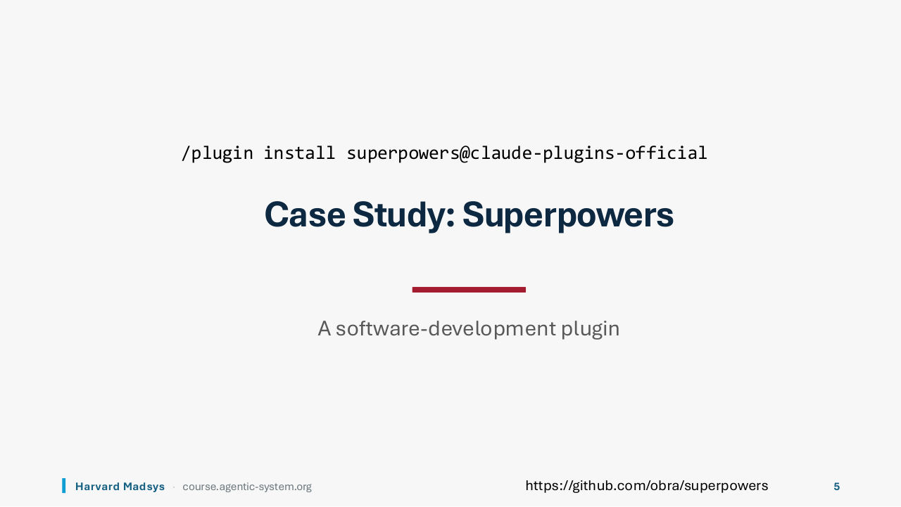
案例研究：Superpowers
一个面向软件开发的插件
https://github.com/obra/superpowers
/plugin install superpowers@claude-plugins-official
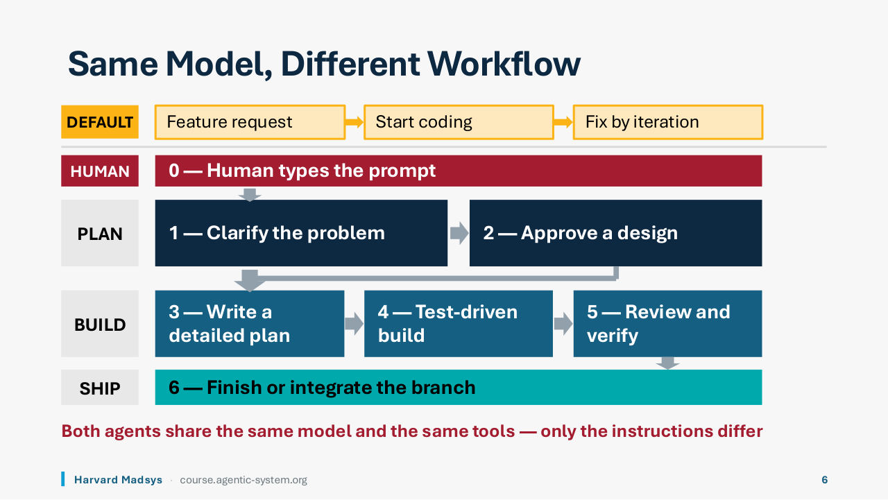
同一个模型，不同的工作流
默认方式：功能需求 → 直接开写代码 → 靠反复迭代修 bug
Superpowers：
- 0 — 人输入提示词（HUMAN）
- 1 — 澄清问题；2 — 批准设计；3 — 写详细计划（PLAN）
- 4 — 测试驱动地构建；5 — 审查与验证（BUILD）
- 6 — 完成或合并分支（SHIP）
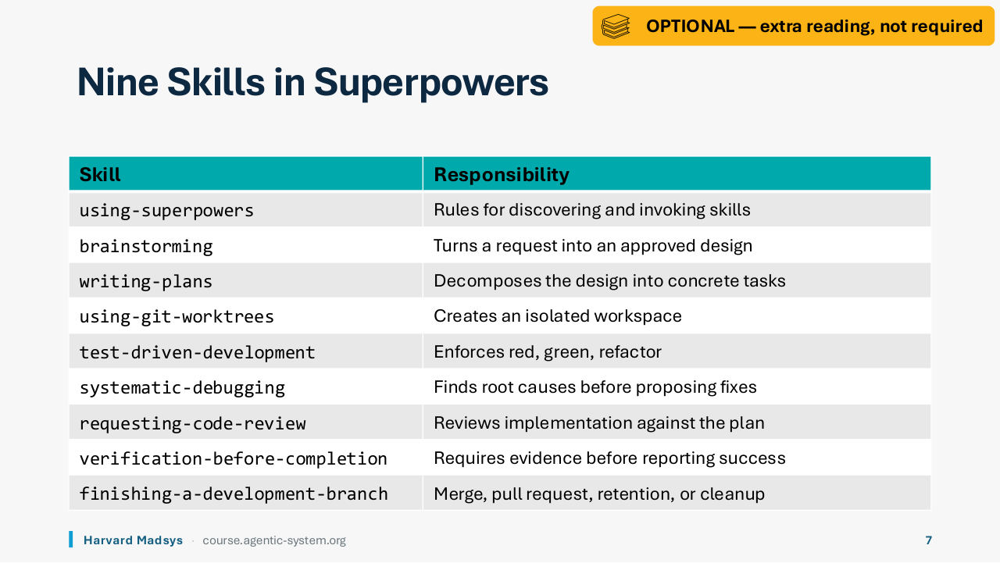
Superpowers 中的九个 Skill
| Skill | 职责 |
|---|---|
| using-superpowers | 发现和调用 Skill 的规则 |
| brainstorming | 把需求变成一份已批准的设计 |
| writing-plans | 把设计拆解为具体任务 |
| using-git-worktrees | 创建隔离的工作区 |
| test-driven-development | 强制执行“红—绿—重构” |
| systematic-debugging | 先找到根因，再提出修复 |
| requesting-code-review | 对照计划审查实现 |
| verification-before-completion | 报告成功前必须给出证据 |
| finishing-a-development-branch | 合并、发 PR、保留或清理 |
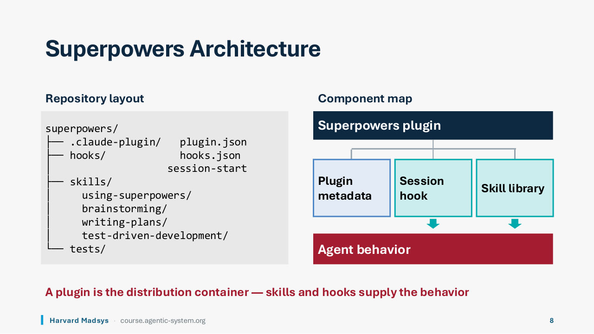
Superpowers 的架构
仓库结构
superpowers/
├── .claude-plugin/ plugin.json
├── hooks/ hooks.json
│ session-start
├── skills/
│ using-superpowers/
│ brainstorming/
│ writing-plans/
│ test-driven-development/
└── tests/组件关系：Superpowers 插件 → 插件元数据 / 会话 Hook / Skill 库 → 智能体行为
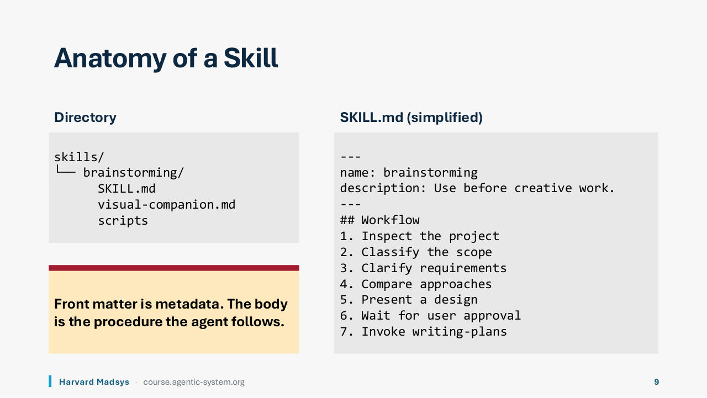
一个 Skill 的解剖
skills/
└── brainstorming/
SKILL.md
visual-companion.md
scriptsSKILL.md（简化版）
---
name: brainstorming
description: Use before creative work.
---
## Workflow
1. Inspect the project # 检查项目
2. Classify the scope # 判断范围
3. Clarify requirements # 澄清需求
4. Compare approaches # 比较方案
5. Present a design # 给出设计
6. Wait for user approval # 等待用户批准
7. Invoke writing-plans # 调用 writing-plans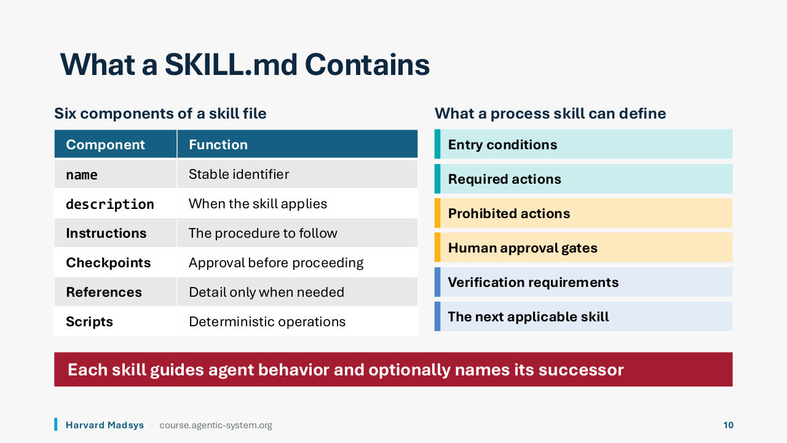
SKILL.md 包含什么
Skill 文件的六个组成部分
| 组件 | 作用 |
|---|---|
| name | 稳定的标识符 |
| description | 什么时候适用这个 Skill |
| Instructions | 要遵循的流程 |
| Checkpoints | 继续之前需要的批准 |
| References | 只在需要时才提供的细节 |
| Scripts | 确定性的操作 |
一个流程型 Skill 可以定义：
- 进入条件
- 必须执行的动作
- 禁止的动作
- 人工审批关卡
- 验证要求
- 下一个适用的 Skill
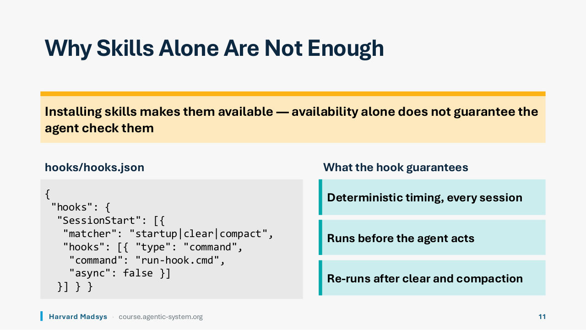
为什么光有 Skill 还不够
安装了 Skill 只是让它“可用”——可用并不保证智能体会去查看它们。
hooks/hooks.json
{
"hooks": {
"SessionStart": [{
"matcher": "startup|clear|compact",
"hooks": [{ "type": "command",
"command": "run-hook.cmd",
"async": false }]
}] } }Hook 保证了：
- 时机确定，每个会话都执行
- 在智能体行动之前运行
- 在 clear 和压缩之后会重新运行
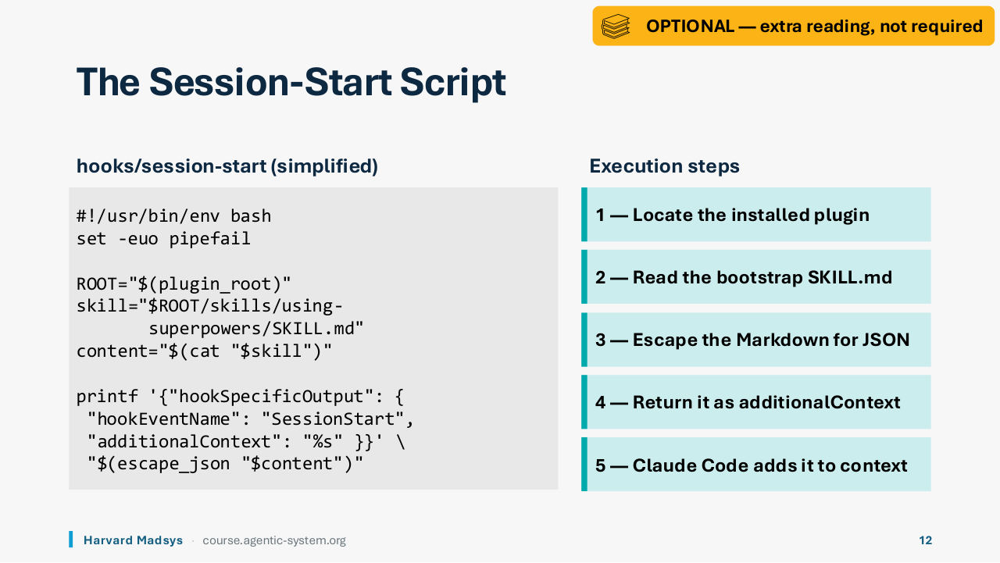
会话启动脚本
#!/usr/bin/env bash
set -euo pipefail
ROOT="$(plugin_root)"
skill="$ROOT/skills/using-superpowers/SKILL.md"
content="$(cat "$skill")"
printf '{"hookSpecificOutput": {
"hookEventName": "SessionStart",
"additionalContext": "%s" }}' \
"$(escape_json "$content")"执行步骤
- 定位已安装的插件
- 读取引导用的 SKILL.md
- 把 Markdown 转义成 JSON
- 作为 additionalContext 返回
- Claude Code 把它加入上下文
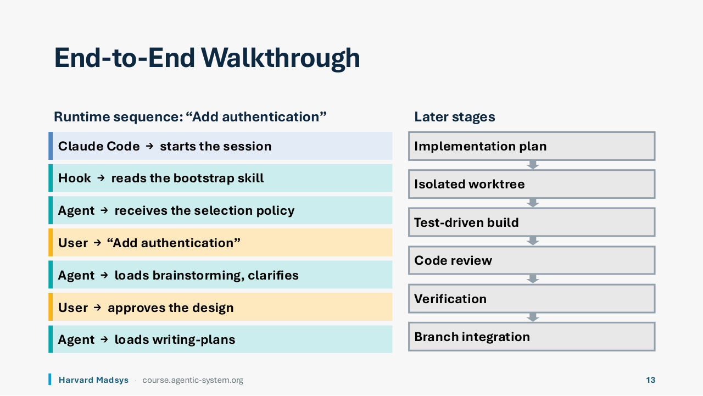
端到端走一遍
运行时序列：“添加鉴权功能”
- Claude Code → 启动会话
- Hook → 读取引导 Skill
- 智能体 → 获得 Skill 选择策略
- 用户 → “添加鉴权功能”
- 智能体 → 加载 brainstorming，澄清需求
- 用户 → 批准设计
- 智能体 → 加载 writing-plans
后续阶段：实施计划 → 隔离的 worktree → 测试驱动构建 → 代码审查 → 验证 → 合并分支
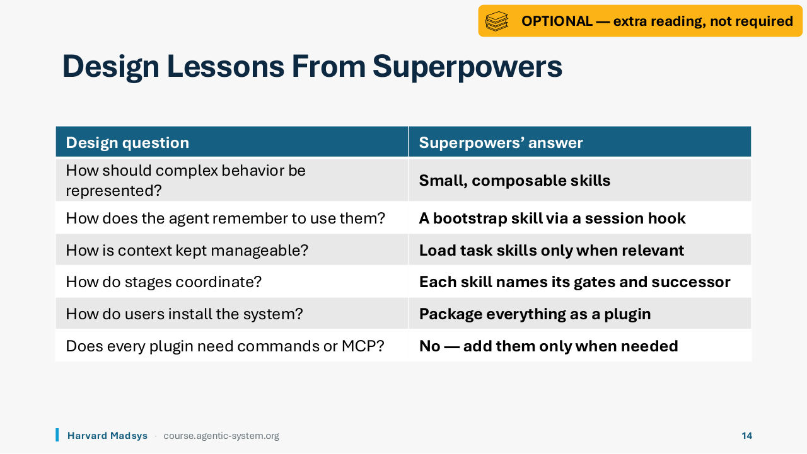
Superpowers 的设计经验
| 设计问题 | Superpowers 的答案 |
|---|---|
| 复杂行为该如何表示？ | 小而可组合的 Skill |
| 智能体怎么记得去用它们？ | 通过会话 Hook 注入一个引导 Skill |
| 如何让上下文保持可控？ | 只在相关时加载任务 Skill |
| 各阶段如何协调？ | 每个 Skill 写明自己的关卡和后继者 |
| 用户如何安装整套系统？ | 全部打包成一个插件 |
| 每个插件都需要命令或 MCP 吗？ | 不需要——只在必要时添加 |
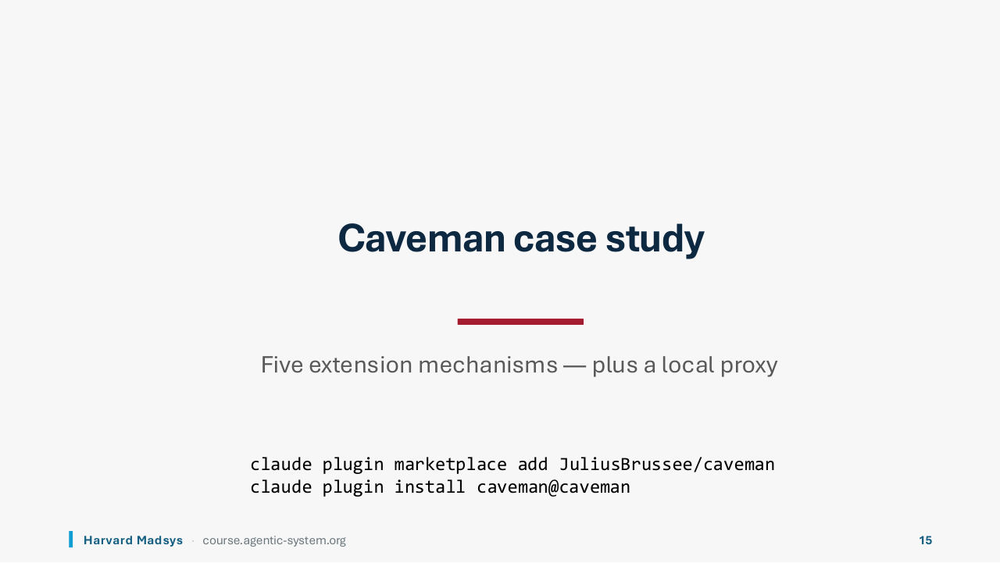
案例研究：Caveman
五种扩展机制——外加一个本地代理
claude plugin marketplace add JuliusBrussee/caveman
claude plugin install caveman@caveman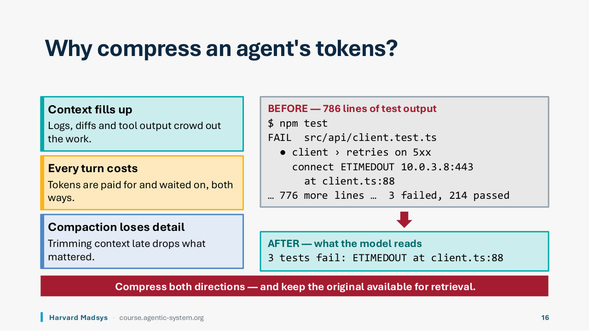
为什么要压缩智能体的 token？
- 上下文会被塞满：日志、diff 和工具输出把真正的工作挤了出去
- 每一轮都有成本：token 要付钱也要等待，输入输出两个方向都是
- 压缩会丢细节：等到很晚才裁剪上下文，会丢掉关键信息
之前——786 行测试输出：
$ npm test
FAIL src/api/client.test.ts
● client › retries on 5xx
connect ETIMEDOUT 10.0.3.8:443
at client.ts:88
… 还有 776 行 … 3 failed, 214 passed之后——模型读到的内容：3 个测试失败：client.ts:88 处 ETIMEDOUT
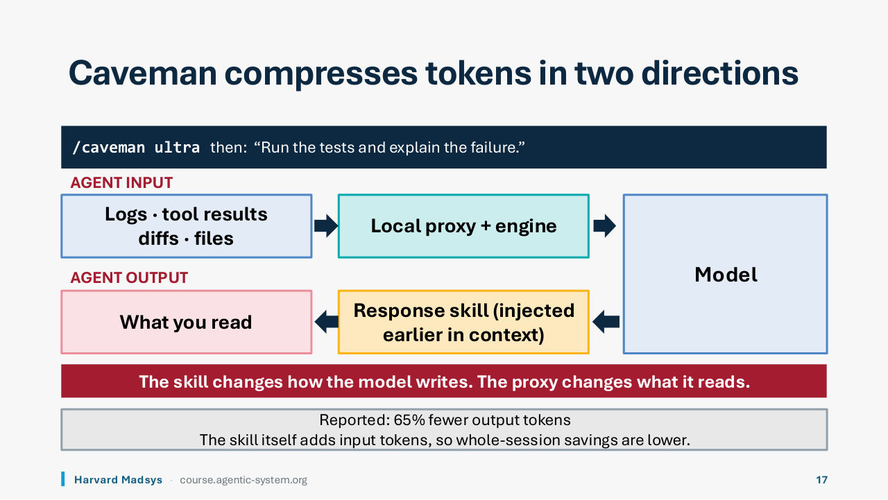
Caveman 从两个方向压缩 token
- 智能体输入：日志 · 工具结果 · diff · 文件 → 经本地代理 + 压缩引擎 → 模型
- 智能体输出：回复风格 Skill（预先注入上下文）→ 你读到的内容
- 据报告：输出 token 减少 65%
- Skill 本身会增加输入 token，所以整个会话的节省幅度更低
/caveman ultra，然后：“运行测试并解释失败原因。”
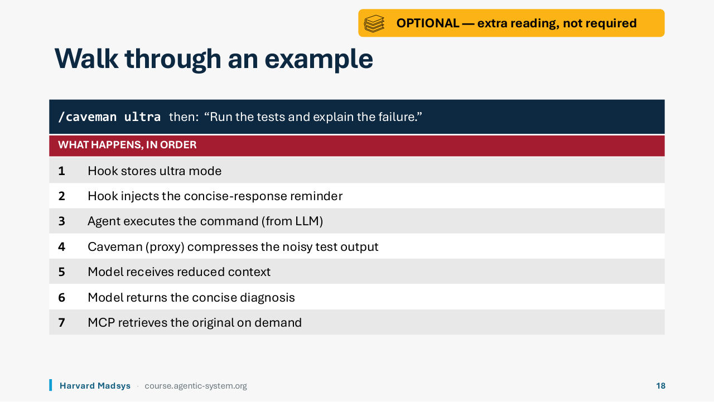
走一遍示例
/caveman ultra，然后：“运行测试并解释失败原因。”
按顺序发生的事：
- Hook 记录 ultra 模式
- Hook 注入“简洁回复”提醒
- 智能体执行命令（由 LLM 决定）
- Caveman（代理）压缩嘈杂的测试输出
- 模型收到精简后的上下文
- 模型返回简洁的诊断
- 需要时由 MCP 取回原文
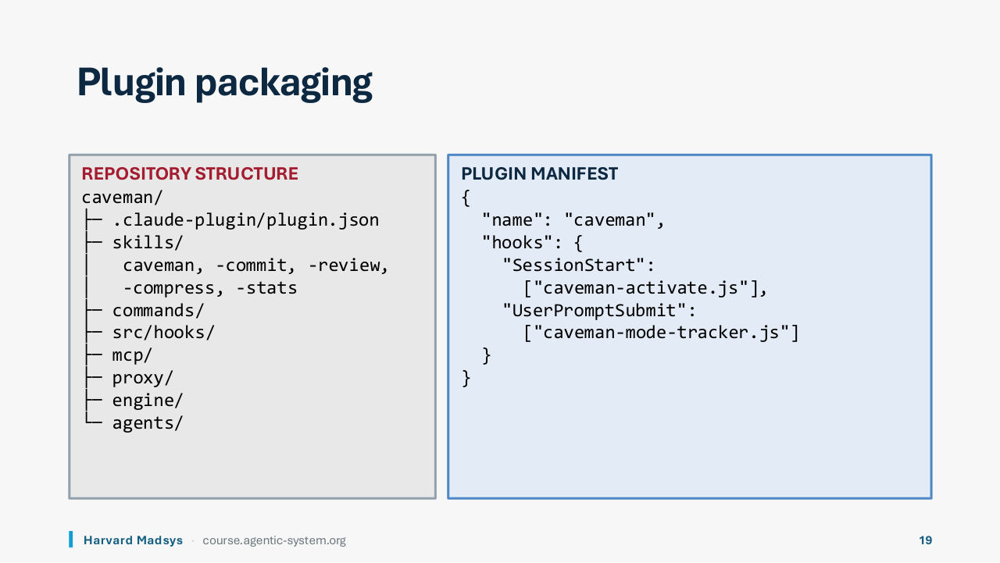
插件打包
仓库结构
caveman/
├─ .claude-plugin/plugin.json
├─ skills/ caveman, -commit, -review, -compress, -stats
├─ commands/
├─ src/hooks/
├─ mcp/
├─ proxy/
├─ engine/
└─ agents/插件清单
{
"name": "caveman",
"hooks": {
"SessionStart": ["caveman-activate.js"],
"UserPromptSubmit": ["caveman-mode-tracker.js"]
}
}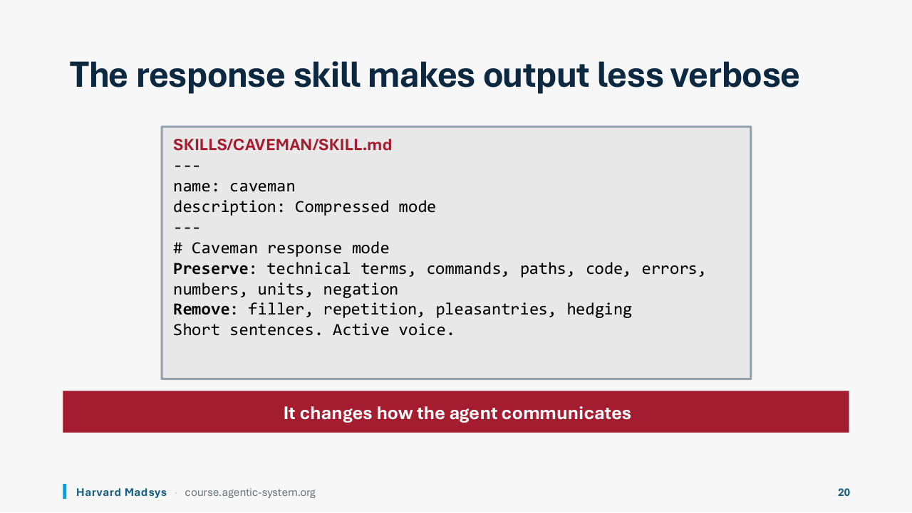
回复风格 Skill 让输出不再啰嗦
---
name: caveman
description: Compressed mode
---
# Caveman response mode
Preserve: technical terms, commands, paths, code, errors,
numbers, units, negation
Remove: filler, repetition, pleasantries, hedging
Short sentences. Active voice.- 保留：技术术语、命令、路径、代码、错误、数字、单位、否定词
- 去掉：废话、重复、客套、含糊其辞
- 短句，主动语态
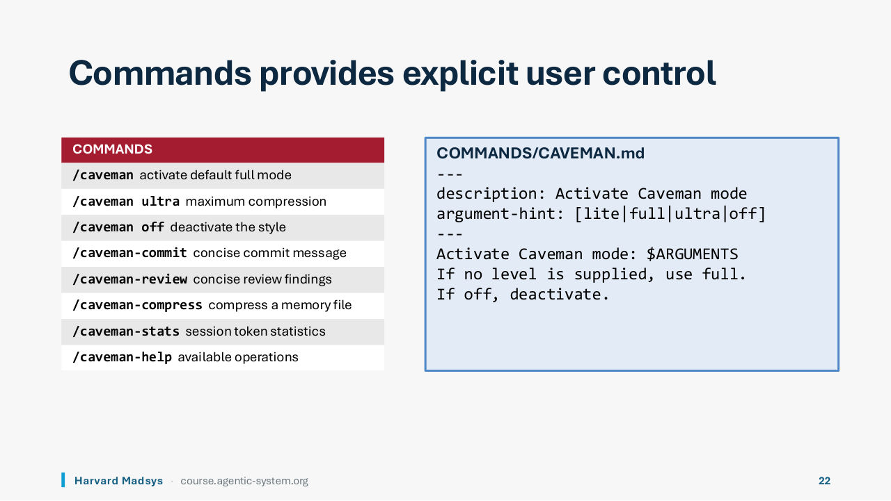
命令提供显式的用户控制
/caveman：启用默认的 full 模式/caveman ultra：最大压缩/caveman off：关闭该风格/caveman-commit：简洁的提交信息/caveman-review：简洁的审查结论/caveman-compress：压缩一个记忆文件/caveman-stats：会话 token 统计/caveman-help：可用操作
commands/caveman.md
---
description: Activate Caveman mode
argument-hint: [lite|full|ultra|off]
---
Activate Caveman mode: $ARGUMENTS
If no level is supplied, use full.
If off, deactivate.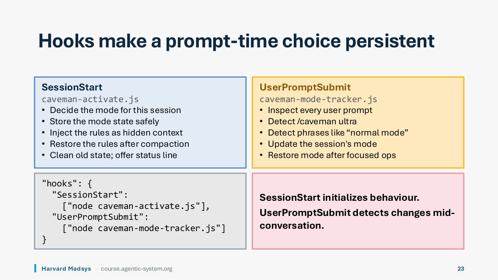
Hook 让提示时做出的选择持续生效
SessionStart — caveman-activate.js
- 决定本会话的模式
- 安全地保存模式状态
- 把规则作为隐藏上下文注入
- 压缩之后恢复规则
- 清理旧状态；提供状态栏
UserPromptSubmit — caveman-mode-tracker.js
- 检查每一条用户提示词
- 检测
/caveman ultra - 检测“正常模式”之类的说法
- 更新会话的模式
- 专项操作结束后恢复模式
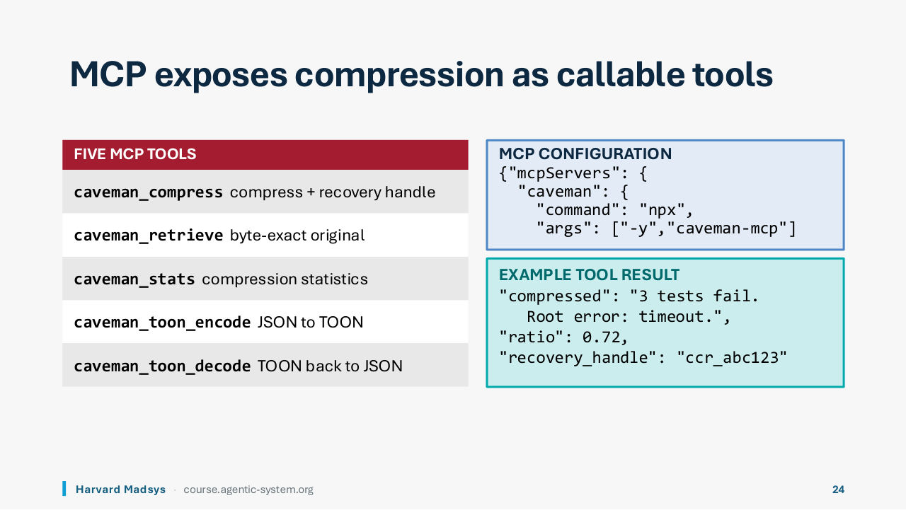
MCP 把压缩能力暴露为可调用工具
五个 MCP 工具
caveman_compress：压缩 + 恢复句柄caveman_retrieve：逐字节一致的原文caveman_stats：压缩统计caveman_toon_encode：JSON 转 TOONcaveman_toon_decode：TOON 转回 JSON
MCP 配置：{"mcpServers": {"caveman": {"command": "npx", "args": ["-y","caveman-mcp"]}}}
工具返回示例
"compressed": "3 tests fail. Root error: timeout.",
"ratio": 0.72,
"recovery_handle": "ccr_abc123"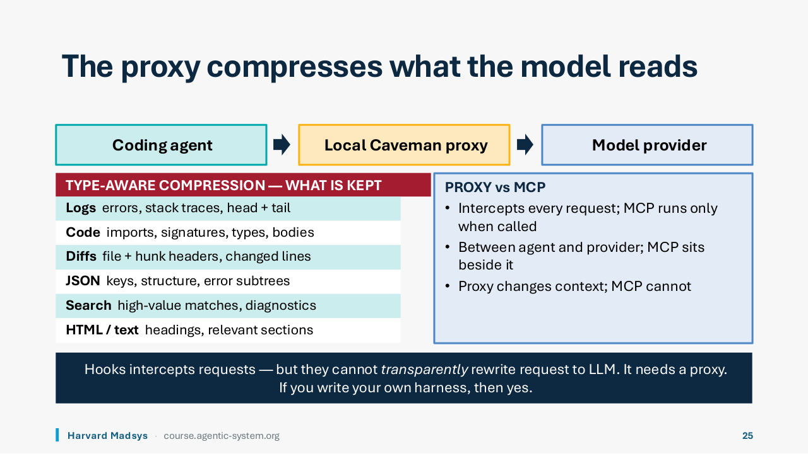
代理压缩模型读到的内容
编程智能体 → 本地 Caveman 代理 → 模型提供商
按类型压缩——保留什么
- 日志：错误、堆栈、头部 + 尾部
- 代码：import、函数签名、类型、函数体
- Diff：文件和 hunk 头、改动行
- JSON：键、结构、错误子树
- 搜索结果：高价值匹配、诊断信息
- HTML / 文本：标题、相关段落
代理 vs MCP
- 代理拦截每个请求；MCP 只在被调用时运行
- 代理位于智能体与提供商之间；MCP 在旁边
- 代理能改变上下文；MCP 不能
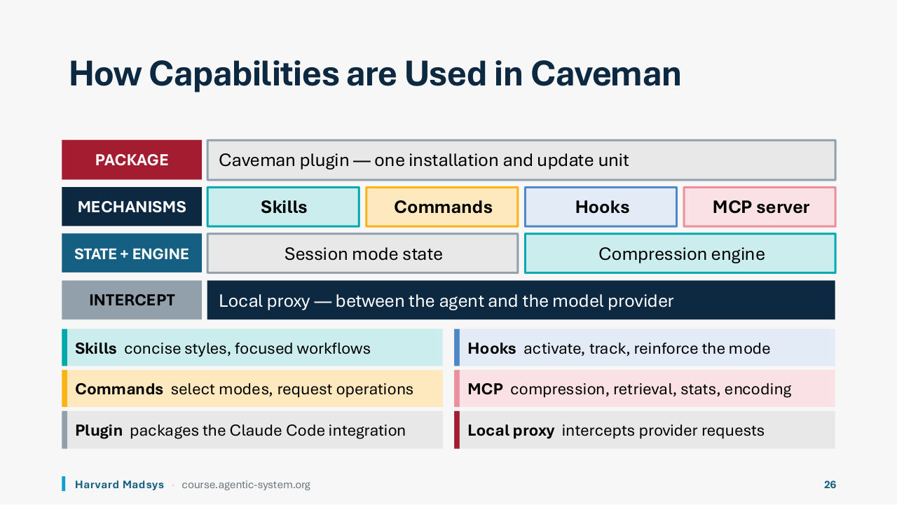
Caveman 如何组合运用各种能力
- Skills：简洁风格、专项工作流
- Hooks：激活、跟踪、强化模式
- Commands：选择模式、请求操作
- MCP：压缩、取回、统计、编码
- 插件：打包 Claude Code 集成
- 本地代理：拦截发往提供商的请求
（图：插件——一个安装和更新单元；机制层：Skills / Commands / Hooks / MCP 服务器；状态 + 引擎：会话模式状态、压缩引擎；拦截层：位于智能体与模型提供商之间的本地代理）
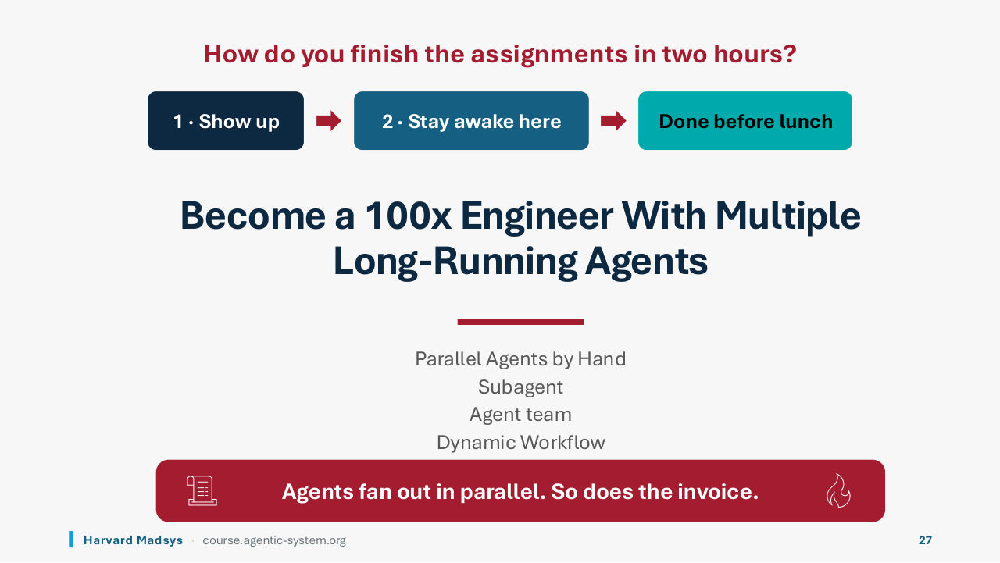
借助多个长时间运行的智能体，成为 100 倍工程师
如何在两小时内完成作业？
- 手动并行智能体 / 子智能体 / 智能体团队 / 动态工作流
- 1 · 出现 → 2 · 在这里保持清醒 → 午饭前搞定
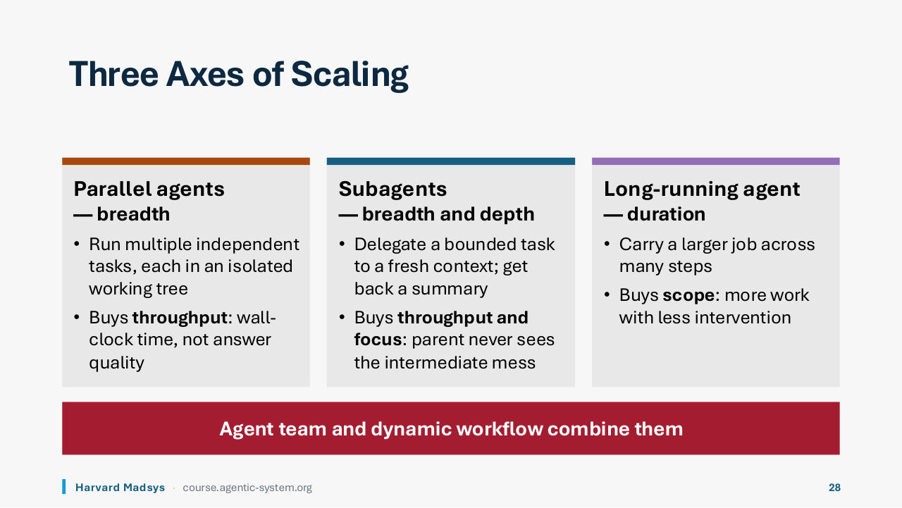
扩展的三个维度
并行智能体——广度
- 运行多个相互独立的任务，每个在隔离的工作树中
- 换来的是吞吐量：节省墙钟时间，而不是提升答案质量
子智能体——广度与深度
- 把一个边界明确的任务委派给全新的上下文，拿回一份摘要
- 换来吞吐量和专注：父智能体永远看不到中间的乱七八糟
长时间运行的智能体——时长
- 把一个更大的任务跨越许多步骤持续推进
- 换来的是范围：更多工作、更少干预
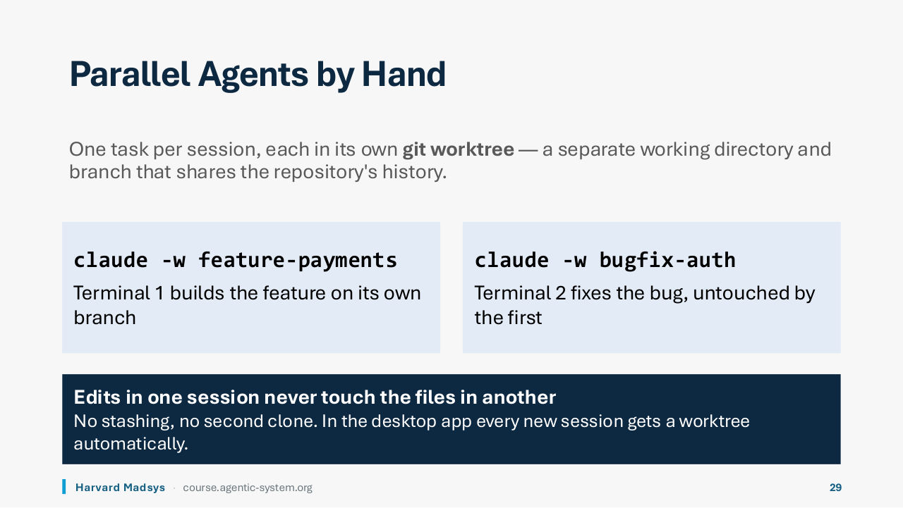
手动并行智能体
每个会话一个任务，各自在自己的 git worktree 中——一个独立的工作目录和分支，共享仓库历史。
claude -w feature-payments：终端 1 在自己的分支上开发功能claude -w bugfix-auth：终端 2 修 bug，与第一个互不影响
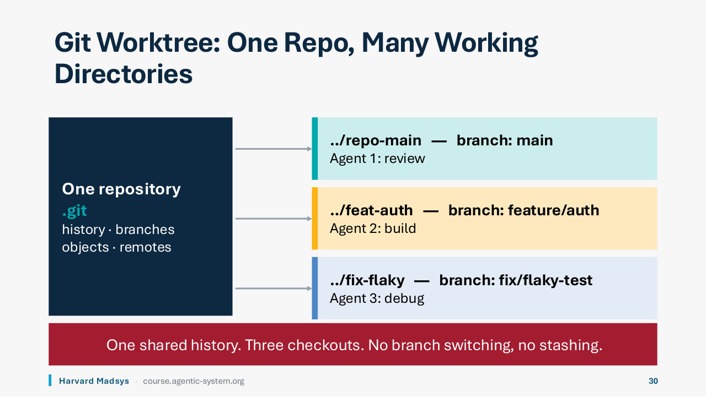
Git Worktree：一个仓库，多个工作目录
一个仓库：.git（历史 · 分支 · 对象 · 远程）
../repo-main— 分支 main — 智能体 1：审查../feat-auth— 分支 feature/auth — 智能体 2：开发../fix-flaky— 分支 fix/flaky-test — 智能体 3：调试
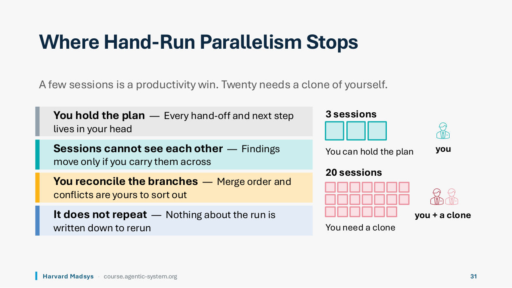
手动并行的极限在哪里
开几个会话能提升效率；开二十个，你就需要一个自己的克隆。
- 计划在你脑子里：每次交接和下一步都只存在你的脑中
- 会话之间互相看不见：发现只能靠你手动搬运
- 分支由你来调和：合并顺序和冲突都要你来处理
- 无法复现：这次运行没有任何记录可以重跑
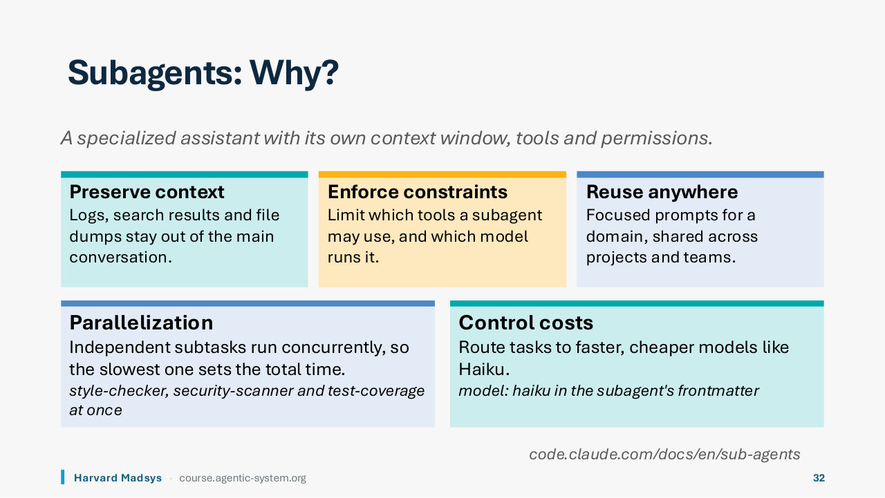
子智能体：为什么？
一个拥有独立上下文窗口、工具和权限的专用助手。
- 保护上下文：日志、搜索结果和文件转储不会进入主对话
- 强制约束：限制子智能体能用哪些工具、由哪个模型运行
- 随处复用：针对某个领域的专注提示词，可在项目和团队间共享
- 并行化：独立子任务并发运行，总耗时由最慢的那个决定——例如同时运行 style-checker、security-scanner 和 test-coverage
- 控制成本：把任务路由给更快更便宜的模型，如 Haiku——在子智能体的前置元数据中写
model: haiku
code.claude.com/docs/en/sub-agents
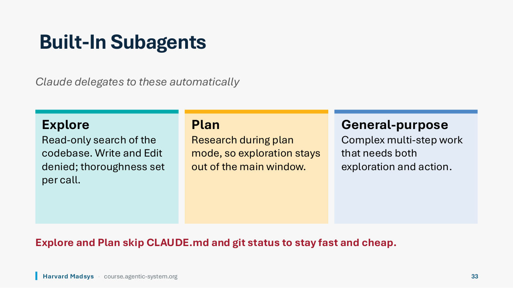
内置子智能体
Claude 会自动委派给它们：
- Explore：只读地搜索代码库。禁止 Write 和 Edit；每次调用可设置彻底程度
- Plan：在计划模式下做调研，使探索过程不进入主窗口
- General-purpose（通用）：同时需要探索和行动的复杂多步工作
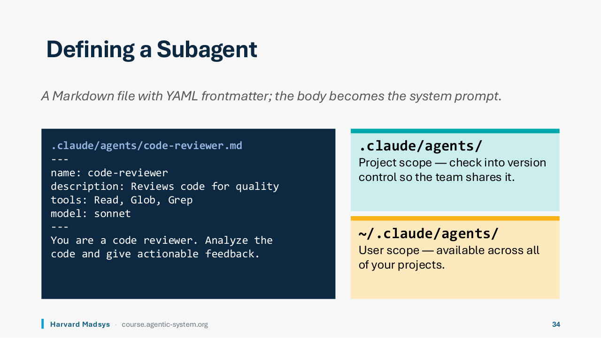
定义一个子智能体
一个带 YAML 前置元数据的 Markdown 文件；正文就是它的系统提示词。
.claude/agents/code-reviewer.md
---
name: code-reviewer
description: Reviews code for quality
tools: Read, Glob, Grep
model: sonnet
---
You are a code reviewer. Analyze the
code and give actionable feedback..claude/agents/：项目范围——提交到版本控制，让团队共享~/.claude/agents/：用户范围——在你的所有项目中可用
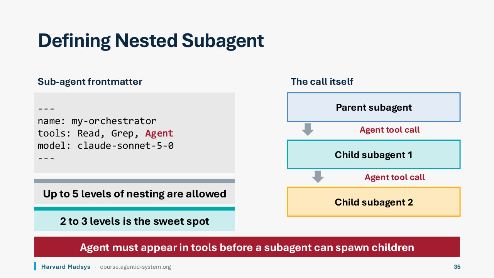
定义嵌套子智能体
---
name: my-orchestrator
tools: Read, Grep, Agent
model: claude-sonnet-5-0
---- tools 中必须包含 Agent，子智能体才能再派生子智能体
- 调用方式：父子智能体通过 Agent 工具调用派生子智能体 1、子智能体 2
- 最多允许 5 层嵌套
- 2–3 层是最佳区间
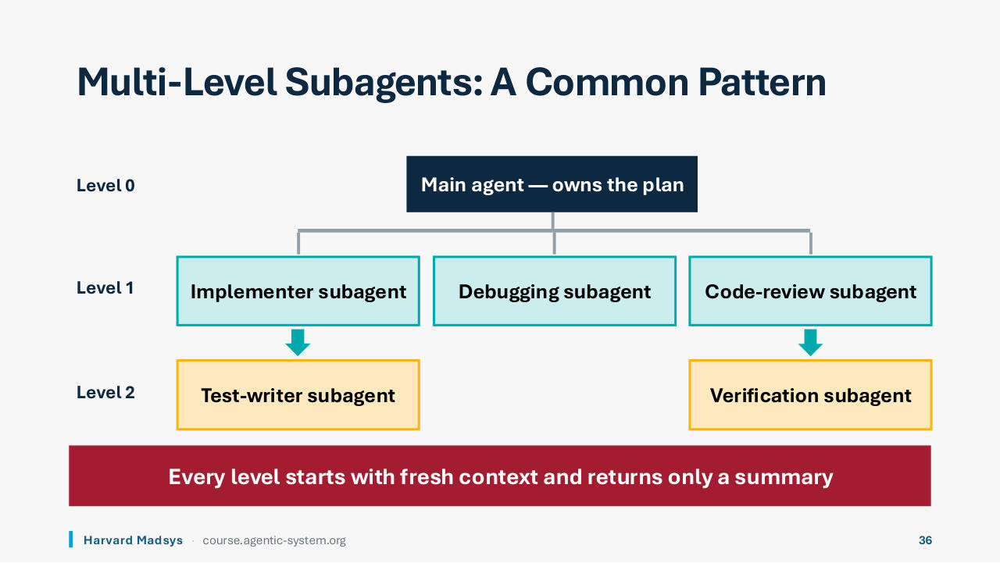
多层子智能体：一种常见模式
- 第 0 层：主智能体——掌握计划
- 第 1 层：实现子智能体、调试子智能体、代码审查子智能体
- 第 2 层：测试编写子智能体、验证子智能体
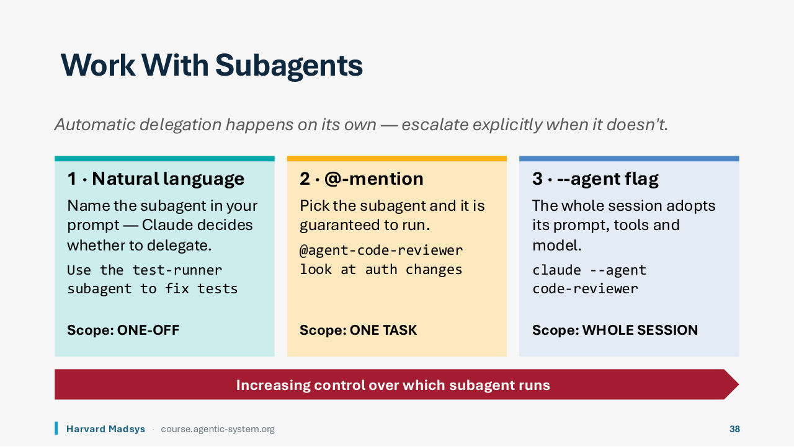
与子智能体协作
自动委派会自行发生——没发生时，就显式升级控制。
- 自然语言：在提示词里点名子智能体，由 Claude 决定是否委派。例：“用 test-runner 子智能体修复测试”。范围：一次性
- @ 提及：选定子智能体，保证它一定运行。例：“@agent-code-reviewer 看看鉴权的改动”。范围：一个任务
- --agent 参数：整个会话采用它的提示词、工具和模型。例：
claude --agent code-reviewer。范围：整个会话
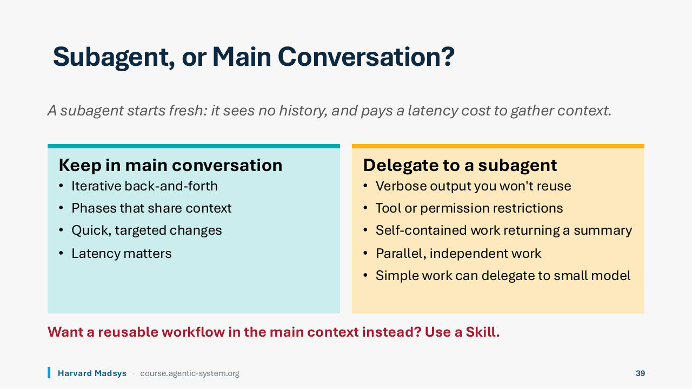
用子智能体，还是留在主对话？
子智能体从零开始：它看不到历史，需要付出延迟代价去收集上下文。
想在主上下文里复用工作流？那就用 Skill。
留在主对话
- 反复来回的迭代
- 共享上下文的多个阶段
- 快速、有针对性的修改
- 对延迟敏感
委派给子智能体
- 冗长且不会复用的输出
- 需要工具或权限限制
- 自成一体、只需返回摘要的工作
- 并行、相互独立的工作
- 简单工作可委派给小模型
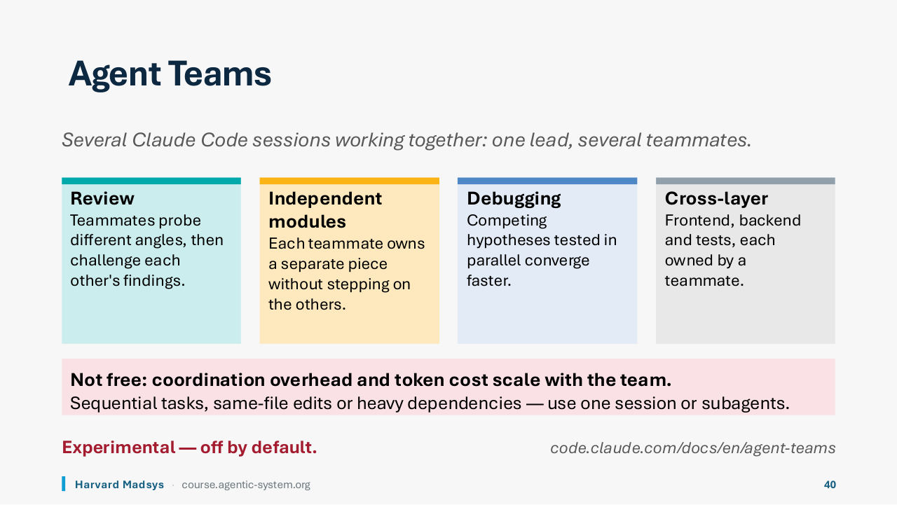
智能体团队（Agent Teams）
多个 Claude Code 会话协同工作：一个负责人（lead），几个队友。
- 评审：队友从不同角度探查，然后互相质疑对方的发现
- 独立模块：每个队友负责一块，互不踩脚
- 调试：并行检验相互竞争的假设，收敛更快
- 跨层开发：前端、后端、测试各由一名队友负责
顺序任务、编辑同一文件或依赖很重——用单个会话或子智能体。
实验性功能——默认关闭。code.claude.com/docs/en/agent-teams
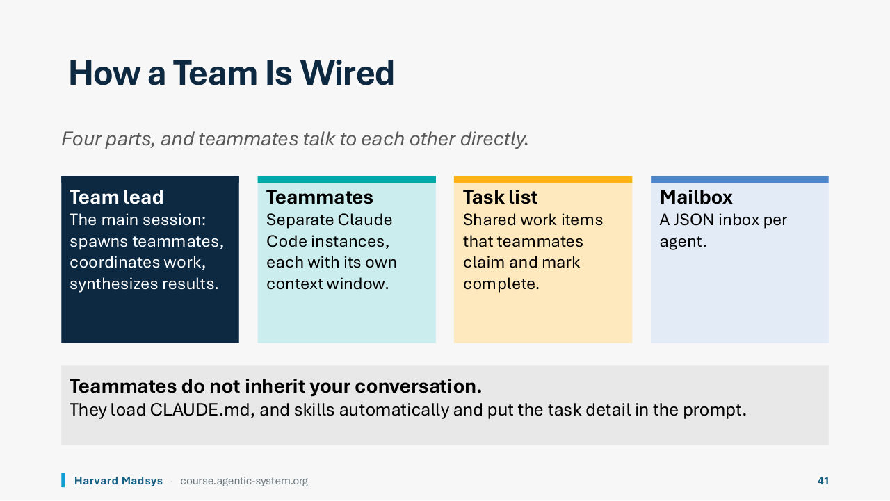
团队是如何连接起来的
四个部分，队友之间直接对话。
- 团队负责人：主会话——派生队友、协调工作、汇总结果
- 队友：独立的 Claude Code 实例，各有自己的上下文窗口
- 任务列表：共享的工作项，队友认领并标记完成
- 邮箱：每个智能体一个 JSON 收件箱
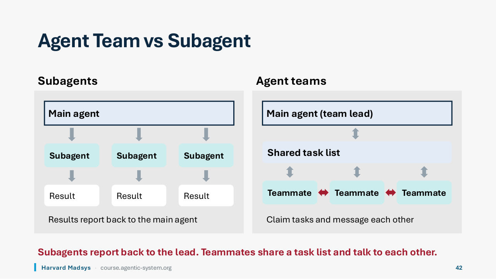
智能体团队 vs 子智能体
子智能体向负责人汇报；队友共享任务列表并互相交流。
- 子智能体：主智能体 → 多个子智能体 → 结果汇报回主智能体
- 智能体团队：主智能体（团队负责人）→ 共享任务列表 ← 队友们认领任务并互发消息
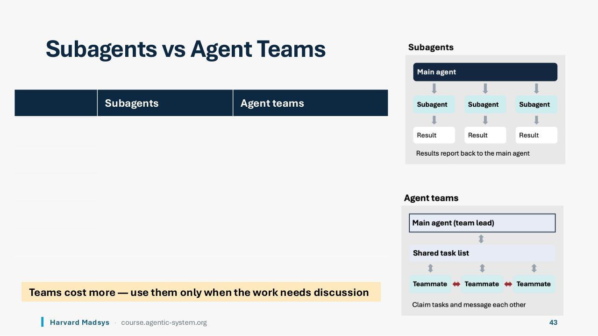
子智能体 vs 智能体团队
| 子智能体 | 智能体团队 | |
|---|---|---|
| 上下文 | 独立窗口，结果交给调用者 | 独立窗口，彼此独立 |
| 通信 | 只回传给调用者 | 队友之间直接通信 |
| 协调 | 负责人管理工作 | 共享任务列表 |
| 最适合 | 只需要结果的任务 | 需要讨论的工作 |
| token 成本 | 较低 | 较高 |
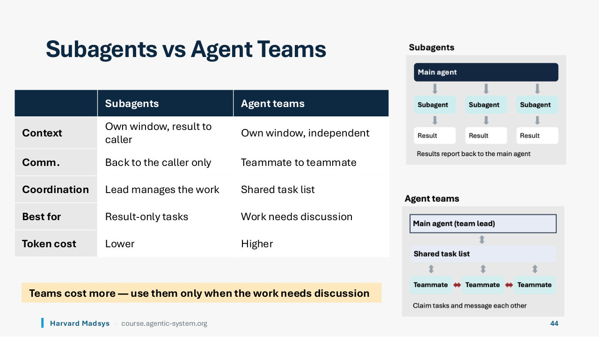
子智能体 vs 智能体团队
（同上页）
| 子智能体 | 智能体团队 | |
|---|---|---|
| 上下文 | 独立窗口，结果交给调用者 | 独立窗口，彼此独立 |
| 通信 | 只回传给调用者 | 队友之间直接通信 |
| 协调 | 负责人管理工作 | 共享任务列表 |
| 最适合 | 只需要结果的任务 | 需要讨论的工作 |
| token 成本 | 较低 | 较高 |
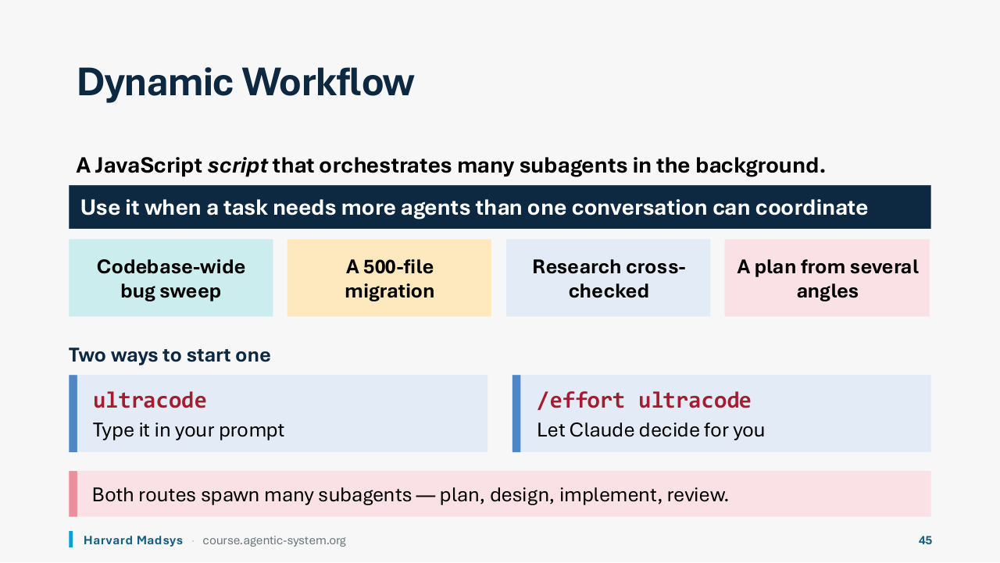
动态工作流（Dynamic Workflow）
一个在后台编排大量子智能体的 JavaScript 脚本。
当一个任务需要的智能体数量超出一次对话能协调的范围时使用：
- 全代码库的 bug 扫查
- 500 个文件的迁移
- 交叉核验的调研
- 从多个角度制定的计划
两种启动方式
ultracode：直接写进你的提示词/effort ultracode：让 Claude 替你决定
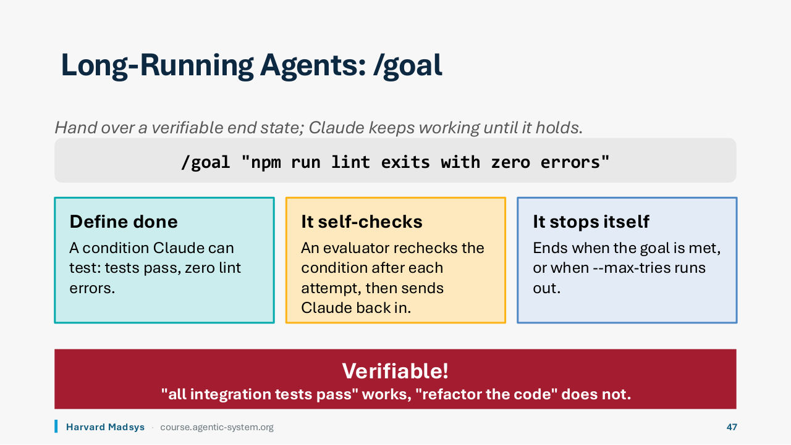
长时间运行的智能体：/goal
交出一个可验证的终态；Claude 会一直工作直到它成立。
/goal "npm run lint exits with zero errors"
- 定义完成：一个 Claude 可以检验的条件——测试通过、零 lint 错误
- 自我检查：每次尝试后由评估器重新检查条件，不满足就让 Claude 继续
- 自行停止：目标达成，或
--max-tries用完时结束
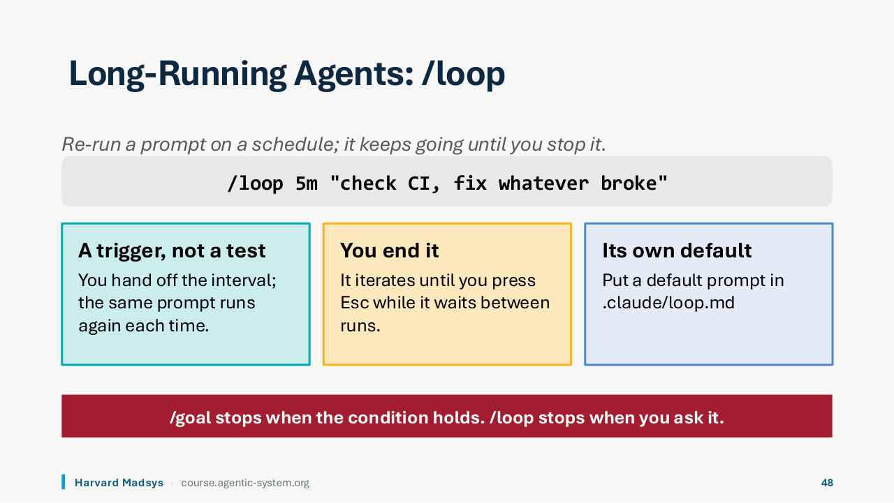
长时间运行的智能体：/loop
按计划反复运行一个提示词；它会一直运行直到你叫停。
/loop 5m "check CI, fix whatever broke"
- 是触发器，不是测试：你交出的是时间间隔；每次运行同一个提示词
- 由你结束：在两次运行之间的等待期按 Esc 才会停止
- 自带默认值：可以在
.claude/loop.md中写一个默认提示词
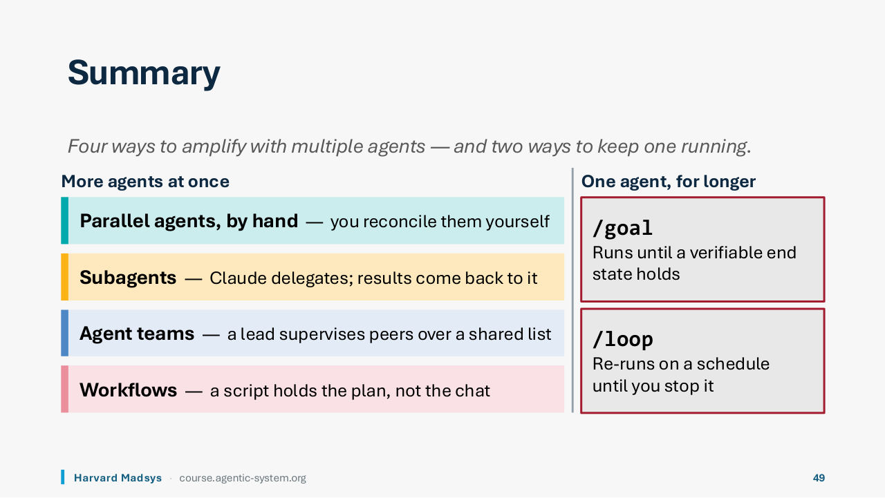
小结
四种用多智能体放大能力的方式——以及两种让单个智能体持续运行的方式。
同时运行更多智能体
- 手动并行智能体——由你自己调和
- 子智能体——Claude 委派，结果回到它手里
- 智能体团队——负责人通过共享列表监督同伴
- 工作流——计划由脚本掌握，而不是对话
单个智能体，运行更久
/goal：运行直到一个可验证的终态成立/loop：按计划重复运行，直到你停止它
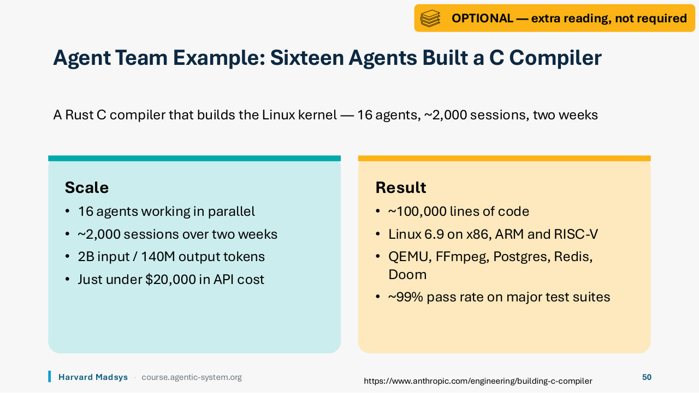
智能体团队案例：16 个智能体构建了一个 C 编译器
一个能编译 Linux 内核的 Rust 版 C 编译器——16 个智能体、约 2,000 个会话、两周
规模
- 16 个智能体并行工作
- 两周内约 2,000 个会话
- 20 亿输入 / 1.4 亿输出 token
- API 成本略低于 2 万美元
成果
- 约 10 万行代码
- 可在 x86、ARM 和 RISC-V 上编译 Linux 6.9
- QEMU、FFmpeg、Postgres、Redis、Doom
- 主要测试套件通过率约 99%
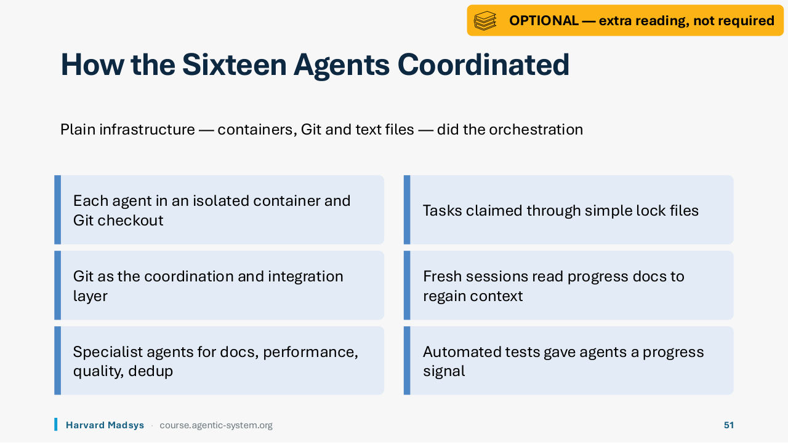
16 个智能体是如何协调的
编排靠的是朴素的基础设施——容器、Git 和文本文件
- 每个智能体在隔离的容器和 Git 检出中运行
- 通过简单的锁文件认领任务
- Git 作为协调和集成层
- 新会话通过阅读进度文档恢复上下文
- 专职智能体负责文档、性能、质量、去重
- 自动化测试为智能体提供进度信号
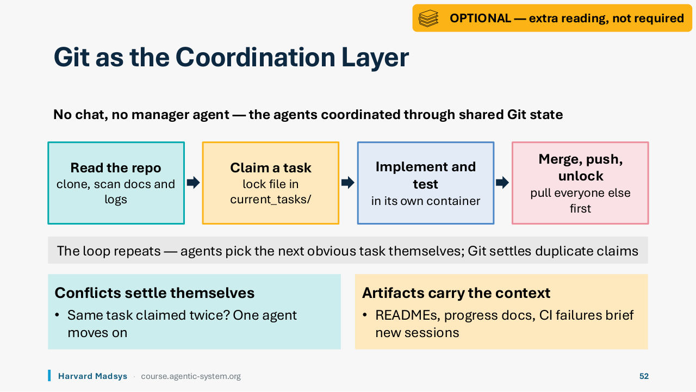
Git 作为协调层
没有聊天，没有管理者智能体——智能体通过共享的 Git 状态来协调。
读取仓库（克隆，浏览文档和日志）→ 认领任务（在 current_tasks/ 中放锁文件）→ 实现并测试（在自己的容器中）→ 合并、推送、解锁（先拉取其他人的提交）
循环往复——智能体自己挑选下一个显而易见的任务；重复认领由 Git 来裁决。
- 冲突自行化解：同一任务被认领两次？其中一个智能体换下一个
- 产物承载上下文：README、进度文档、CI 失败信息为新会话提供背景
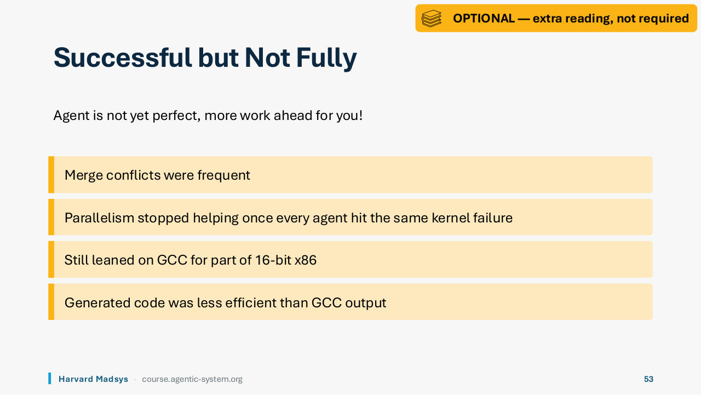
成功，但不完全
智能体还不完美，还有很多工作等你去做！
- 合并冲突频繁
- 当所有智能体都卡在同一个内核故障上时，并行就不再有帮助
- 16 位 x86 的部分仍依赖 GCC
- 生成的代码效率低于 GCC 的输出
编程 / 软件 3.0
编程 3.0
- 编程 1.0（为硬件编程）：人 → 显式的机器指令或汇编 → 硬件
- 编程 2.0（编程语言）：人 → 编程语言 → 编译器 → 机器指令 → 硬件
- 编程 3.0（表达目标）：人 → 自然语言 → 智能体 → 编程语言 → 机器指令 → 硬件
（这个术语是我提出的，与 Andrej 的定义不同，见下页）
软件 3.0（Andrej Karpathy）
- 软件 1.0：人 → 代码 → 计算机
- 软件 2.0：人 → 数据 → 优化器 → 神经网络
- 软件 3.0：人 → 语言 / 上下文 → LLM → 行动
| 范式 | 程序是什么？ | 如何创建？ |
|---|---|---|
| 1.0 | 源代码 | 写 Python/C++ |
| 2.0 | 神经网络权重 | 收集数据 + 优化 |
| 3.0 | LLM 提示词 | 自然语言 |
编程 3.0 中的不确定性
不确定性是新东西吗？
| 不确定性来源 | 硬件 | 环境 | 软件 |
|---|---|---|---|
| 编程 3.0 新增 | GPU 计算：非确定性 kernel、浮点差异 | 代码生成时的交互：写代码的同时会触碰环境 | 编译器、模型：不同的 kernel、采样 |
| 编程 2.0 | 体系结构：32 位 vs 64 位、字节序 | 并发、不可靠的网络 | 编译器版本、依赖漂移 |
| 2.0 如何解决 | 定宽类型、交叉编译、虚拟化 | 内存一致性模型、幂等 API | 升级前全面测试 |
更多一点不确定性：从意图到结果
- 1.0 / 2.0：人（产品经理）→ 需求 → 程序员（环境、记忆）→ 程序 → 结果
- 3.0：人 → 需求 → LLM 智能体（环境、记忆）→ 程序 → 结果
- 各环节：单个提示词导致输入含糊（需要更多研究）；程序到结果的不确定性已在上一页讨论；形式化验证（被忽略，但确实存在）
与不确定性共处
- 自然语言：语义不确定性
- 检索 / 上下文：检索漂移——索引更新、分块、上下文截断
- 模型生成：概率性波动——1. 采样；2. 软件和硬件的非确定性
- 智能体/工具循环：轨迹/环境的非确定性——工具失败、环境变化
- 生成的程序：一旦生成通常是确定的——除非它在运行时调用模型或工具
编程 / 软件 3.0 的最佳实践
1 · 定义
- 预先说明假设：执行前让模型确认任何含糊之处
- 规定结果，而不是提示词：给出需求、不变量、约束和验收测试
2 · 控制
- 把提议与执行分开：智能体提出计划；在任何东西被提交之前先验证
- 显式管理上下文：自己掌管记忆、来源和检索；让过时信息失效
3 · 验证与治理
- 收紧“生成—验证”循环：廉价、频繁的检查胜过最后一次昂贵的审查
- 再往深测一层：编写测试，度量多个指标，使用你能推理的合成负载
别指望智能体是确定性的
让自主程度与风险相匹配：自主程度越高，不确定性和风险越大。
来自一线的证据
- 来自 Codex 的证据（2026 年 6 月）
- OpenAI 员工的使用情况（2026 年 9 月）
从对话到委派
对话式 AI：人提问 → 模型回答 → 人始终在回路中 → 人执行工作。人是执行者。
智能体式 AI（Codex）：人委派任务 → 智能体规划、调用工具、编辑文件、运行命令 → 交付产物或动作。人负责审查和整合。
向智能体式 AI 的转变：来自 Codex 的证据——2026 年上半年活跃用户增长超过 5 倍。
| 过去 28 天使用过 Codex | 比例 |
|---|---|
| 个人用户 | < 1% |
| 组织用户 | 17.3% |
| OpenAI 员工 | 几乎全部 |
委派的任务越来越大
| 2025 年 12 月 | 2026 年 5 月 | |
|---|---|---|
| 任务 ≥ 1 人时 | 35.4% | 70.2% |
| 任务 ≥ 8 人时 | 2.1% | 25.6% |
一个人，多个智能体
人 → 智能体 A（开发功能）/ 智能体 B（运行分析）/ 智能体 C（调试 + 测试）→ 审查 · 整合 · 再委派
- 28.6% 的 OpenAI 用户在一周内曾同时运行 5 个以上智能体
- OpenAI 员工中位数：每天约 2.5 智能体小时
- 第 99 百分位：每天约 71 智能体小时（自 4 月以来增长 88%）
智能体的“工作日”已远超人类研究员
2026 年 6 月之前，智能体运行时长落后于人类劳动；现在智能体完成的工作量是人类的 3.14 倍。
大多数研究员同时有 4 个以上并行工作流（图中未显示）。（2026 年 9 月）
工程师的交付速度快了近 8 倍
（图表：工程交付速度的变化）
智能体能解决越来越复杂的任务
但仍然需要人工介入。（图表）
编程智能体正在重塑 OpenAI 研究员的日常工作
Research acceleration: The view inside OpenAI（2026 年 9 月）
委派阶梯
- 聊天机器人——AI 回答，人来干活
- 助手——人和 AI 一起完成任务
- 智能体——人委派一整块工作
- 多智能体工作者——人协调多个智能体
- 系统化工作流——Skills 和智能体运行整个流程
下节课
- 智能体设计 I
- 找助教登记你的课堂参与分
选读幻灯片
Claude Code 之外
模型厂商（模型 + Harness 一体）：Claude Code、Codex CLI、Antigravity CLI、Grok Build、Mistral Vibe、Kimi Code、Qwen Code
平台 CLI（嵌入开发工具栈）：Copilot CLI、Cursor CLI、Amp、Auggie、Droid、Junie CLI、Qoder、CodeBuddy
开源（自带密钥）：OpenCode、Crush · Goose、Aider · Cline、Kilo · Continue、OpenHands、Reasonix、Codebuff
极简内核（小而可审计）：Deepseek Harness、Pi · oh-my-pi（Omp）、mini-SWE-agent、gptme、Open Interpreter
（来源：State of CLI Coding Agents, Mid-2026，2026 年 7 月）
它们的差异：五个关键维度
- 开源 vs 闭源：开源——Codex CLI、OpenCode、Goose、Cline、Pi；闭源——Claude Code、Copilot CLI、Cursor、Droid、Junie
- 锁定 vs 自带密钥（BYOK）：单一厂商——Claude Code、Antigravity CLI、Grok Build；任意端点——OpenCode 支持 75+ 提供商，Kilo 支持 500+ 模型
- 沙箱 vs 提示确认：操作系统沙箱——Codex CLI、Copilot CLI、OpenHands 容器；权限提示——Claude Code 及大多数其他工具
- 本地 vs 云端：本地优先、无遥测——Goose、Nanocoder、gptme；云端接管——Copilot CLI、Codex、Mistral Vibe 远程智能体
- 大而全 vs 极简：应有尽有——Omp（功能最全）、Claude Code；只有四个工具——Pi、mini-SWE-agent（约 100 行 Python）